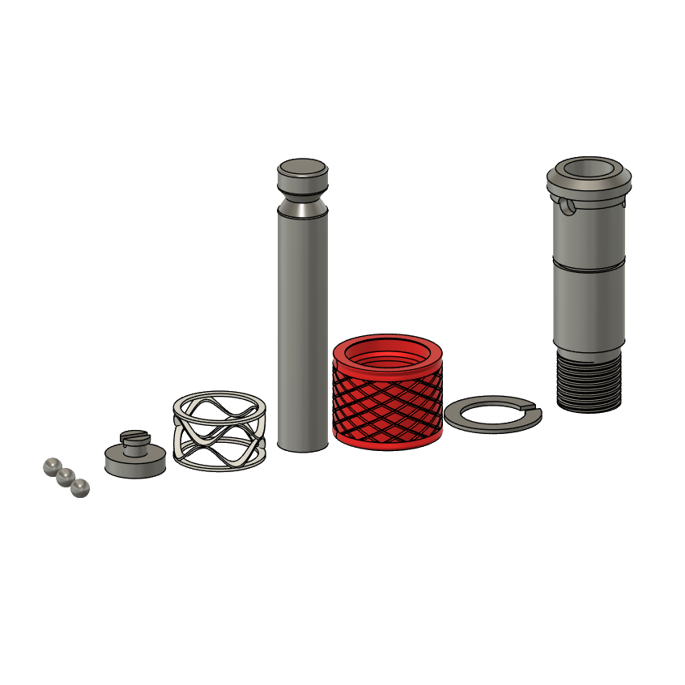

Grimsmo Saga Mechanism
How does the Grimsmo Saga Mechanism work?
Stand: 26.08.2026
Der 'Saga' ist ein einfarbiger, sogenannter 'Machined Pen' vom kanadischen Hersteller Grimsmo.
Da ich den Mechanismus interessant fand, habe ich versucht, ihn zu verstehen und erklären. Hier teile ich die Ergebnisse.

Das Prinzip entspricht dem eines Spring Plungers bzw. Federkolbens.
Der äußere Schiebering (in rot dargestellt) und der Drücker besitzen jeweils eine gefaste Ringnut.
Beim Drücken des Drückers in den Stiftkörper können die Keramikkugeln in die Nut des Drückers entweichen, woraufhin der Schiebering weiter hochfedert und die Kugeln am Zurückrollen hindert.
Erst durch das Herunterschieben des Schieberings können die Kugeln, welche konstant von der Drückernut nach außen gedrückt werden, wieder in die Nut des Schieberings entweichen, wodurch sich der Drücker einziehen (nach oben fahren) kann.
Was ist ein Machined Pen?
Ein 'Machined Pen' ist ein Stiftkörper (meist für Kugelschreiberminen), der in Zerspanungsverfahren gefertigt wurde.Normale Stifte sind meist aus dünnem Metall hergestellt, für die verschiedene schnelle Umformungsverfahren existieren.
Der Machined Pen wird subtraktiv aus soliden Blöcken und Rundstangen herausgeschnitten. Das benötigt bis zu Stunden an Maschinenzeit über alle Einzelteile hinweg und verbraucht erheblich mehr Material.
Desweiteren ist er meist aus besonders anspruchsvollen und gefährlich zu verarbeitenden Metallen gefertigt.
Das alles sorgt dafür, dass ein Machined Pen schnell 100-500€ kosten kann.